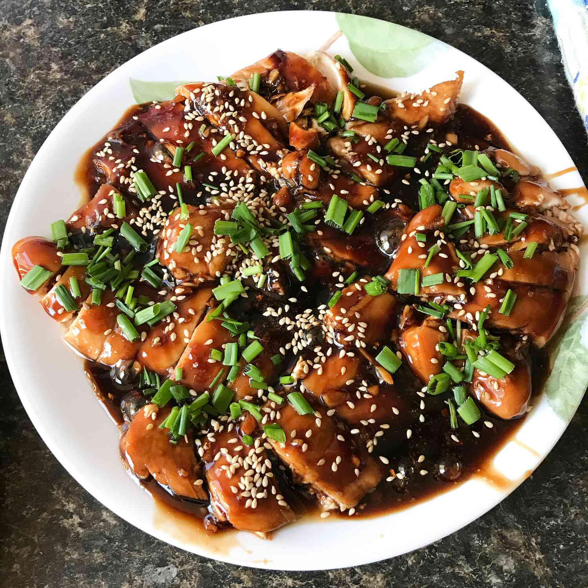

Oven Baked Chicken Teriyaki
Home

Ingredients (1x)
- 1 tablespoon cornstarch
- 1 tablespoon cold water
- ½ cup white sugar
- ½ cup soy sauce
- ¼ cup cider vinegar
- 1 clove garlic, minced
- ½ teaspoon ground ginger
- ¼ teaspoon ground black pepper
- 12 skinless chicken thighs
Instructions
- Preheat oven to 425 degrees F (220 degrees C).
- Whisk cornstarch and water together in a small bowl until dissolved; set aside. Combine soy sauce, sugar, mirin, ginger, garlic, and red pepper flakes together in a saucepan over medium heat until the mixture starts to simmer. Slowly whisk in cornstarch mixture. Bring to a boil; reduce heat to medium-low, and simmer until thickened, stirring often, about 10 minutes.
- Pat chicken dry with paper towels; arrange in a baking dish. Pour sauce over chicken breasts, coating all sides.
- Bake chicken breasts in the preheated oven until no longer pink in the center and the juices run clear, 25 to 30 minutes. An instant-read thermometer inserted into the center should read at least 165 degrees F (75 degrees C).
Enjoy!